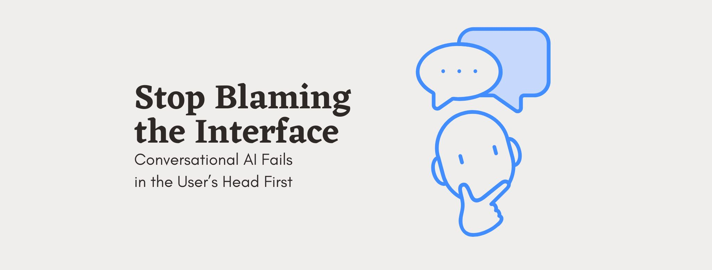
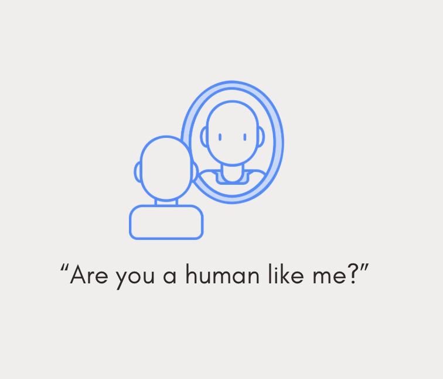

A lot of conversations with AI products go wrong. But if you dig into why these interactions really fail, you'll often find that the problem isn't in the interface at all, but it's psychological and it starts in the user's head, before they've even typed a word.
Everyone walks into a conversation with a chatbot, voice assistant, or AI companion already carrying a set of expectations: about how smart it is, whether it can be trusted, whether it's "just a machine" or something closer to a person, etc. Those expectations quietly decide what we say, how forgiving we are, and whether we consider the interaction a success or a failure. Which means that shaping those expectations is just as much a design task as shaping the conversation flow itself.
A lot of research in human-computer interaction is arriving at the same conclusion from different angles: What people expect from a conversational system matters as much as, or more than, what the system actually does.
Some of the earliest and most cited work on this comes from interviews with everyday users of voice assistants like Siri and Cortana, which found that people's mental image of what an assistant should just “know” was completely disconnected from what these systems were built to handle. That mismatch, and not any particular bug, was the main source of frustration (Luger & Sellen, 2016).
More recent experimental work backs this up in a stricter, more controlled way: if you give different users the exact same chatbot, but they start the interaction with different assumptions about how to talk to it (e.g., natural language vs. keywords, general answers vs. personalized ones), their success rates on identical tasks can differ by dozens of percentage points. Interestingly, when a system quietly adapts to match what a user seems to expect, both satisfaction and actual task completion go up (Vanderlyn, Väth & Vu, 2024). Again, expectations!
Expectations don't just shape how people judge a system's competence, they shape how emotionally connected people feel to it, and how much they're willing to share with it. Studies on anthropomorphism have repeatedly shown that human-like names, avatars, and language styles increase people's emotional connection to a chatbot (and even to the company behind it) largely independent of how the conversation actually unfolds. Some of this is about identity framing rather than design: Simply telling someone they're chatting with a person rather than a bot, even when the underlying system is identical, changes how much they disclose and how comfortable they feel doing it (Warren-Smith et al., 2025).

But humanizing a bot isn't always a good idea. A few studies have found that matching the style of humanness to the person matters more than the amount of it, since a warm tone lands differently depending on who's on the receiving end (Roy & Naidoo, 2020).
If expectations do this much work before a conversation even starts, then designing a good conversational experience has to include designing what people expect to walk into. Here are a few starting points.
Pay attention to the first few seconds of any interaction, because that's when a person's mental model is set. The opening message, the avatar, the tone of the greeting, these tell someone what kind of thing they're about to talk to, and once that impression forms, people tend to interpret everything afterward through it. A slightly awkward response from a system framed as a simple assistant gets forgiven, but the same response from something framed as deeply intelligent gets read as a failure.
Treat personalization choices as expectation-setting tools, not just aesthetic ones. Giving a bot a name, a face, or a particular way of speaking isn't just about making it feel nicer to use, but it actively changes how much people trust it, how much they share with it, and how forgiving they are of its mistakes. These choices deserve the same care as the conversation design itself, rather than being an afterthought handled by whoever's free at the end of a sprint.
Match the personality of the system to the audience and context it's actually being used in, rather than copying whatever worked somewhere else. A warm, chatty tone that works beautifully for a wellness app might feel odd in a banking context, and a crisp, efficient tone that works for customer support might feel cold in a companionship app. There's no universal "more human is better”, there's only "appropriate to this person, in this moment, for this task."
Be thoughtful about how directly you frame what the system is. Whether and how a bot identifies itself as AI changes people's behavior in ways that aren't always intuitive, sometimes transparency builds trust, and sometimes it triggers exactly the skepticism you were trying to avoid.
Conversational AI research spends a lot of energy on getting the language right: better intents, better generation, more natural phrasing. All of that matters. But some of the most persistent failures in this space aren't linguistic or technical at all, they're the result of a mismatch between what a person expected to find on the other side of the screen and what was actually there. That gap lives in psychology, not in code.
This means that building a good conversational AI experience isn't just an engineering problem, or even just a design problem, but a question about how people think, what they assume, and how quickly those assumptions form. The next time an AI conversation goes sideways, it might be worth looking less at the transcript, and more at what the person believed before the conversation ever began.